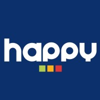
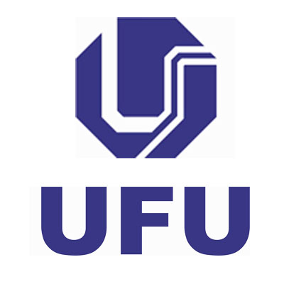

Sou apaixonado por computação desde minha adolescência onde tive meu primeiro contato com programação durante o ensino médio. Sempre me interessei em problemas lógicos e com TI me sinto contemplado. Sinto que essa área me proporciona um desenvolvimento criativo a cada vez que me surge um desafio. Além disso, ter contato com meu lado artístico por meio do web design me inspira, já que consigo expor meu lado artístico. Sendo assim, admirio muito o desenvolvimento web, sempre procurando maneiras de me desafiar e aprender novas tecnologias.
Sobre mim

Experiencia Profissional
Analista de sistemas
Banco Safra
São Paulo, Brasil
Maio de 2022 - Atualmente
Instrutor de programação
Happy Code

Uberlândia, Minas Gerais, Brasil
Junho de 2021 - Maio de 2022
Trabalhei dando suporte teórico na parte de programação e desenvolvimento de jogos
Atuava na educação de pensamento computacional utilizando ferramentas como Unity, Scratch e MinecraftEducation.
Gerente de marketing
ConsultEQ
Uberlândia, Minas Gerais, Brasil
Dezembro de 2020 - Junho de 2021
Atuava coordenando a Social Midia, estruturando campanhas publicitárias
com GoogleAds e FacebookAds, gerenciando produção interna de conteúdos e
manutenção do site da empresa.
Consultor de marketing
ConsultEQ
Uberlândia, Minas Gerais, Brasil
Julho de 2020 - Dezembro de 2020
Atuava na produção de artes para Social Media da empresa,
manutenção da qualidade visual e criação de conteúdos internos.
Projetos
Event API - C#
Uma API feita para simular uma aplicação de criação e reserva. Possui integração com banco de dados e algumas regras de negócios.
Gerador de novela mexicana - Python
Um programa simples em python que trabalha com manipulação de arquivos que gera automaticamente um roteiro clichê de uma novela. Todo o script é automatizado e respeita a ordem cronológica da própria historia.
LetSafe - C#
Uma aplicação em WindosForms para simular um sistema de uma seguradora. Existe uma integração com banco de dados onde é resgatado cadastros, contratos, sinistros, etc... Esse projeto foi feito em conjunto com Mariane de Souza Carvalho e Matheus Amaro Silva
TopViewRPG - Unity
Um jogo feito no estilo RPG Top View onde busquei melhorar meus códigos dentro da Unity, buscando fazer um jogo mais robusto, onde seria fácil implementar novas funcionalidades sem quebrar meu código.
Missing - Unity
Meu primeiro jogo feito no Ensino Médio. Foi minha tentativa de criar um jogo no estilo Run and Gun. Não tem nenhum roteiro e o código é bem simples. Porém foi a primeira vez que tive autonima em um projeto :)
Formação
Acadêmica
Engenharia - Universidade Federal de Uberlândia

2019 - 2024
Uberlândia, Minas Gerais, Brasil
Técnico em Computação Gráfica - Instituto Federal do Triangulo Mineiro
2016 - 2018
Uberlândia, Minas Gerais, Brasil
Certificações
Top Coder - Full Stack
Fevereiro 2023
600 Horas
Let's Code from Ada
Bootcamp - Front End Developer
Fevereiro 2022
99 Horas
Digital Inovation One
Programação Orientada a Objetos C#
Fevereiro 2022
37 Horas
Udemy